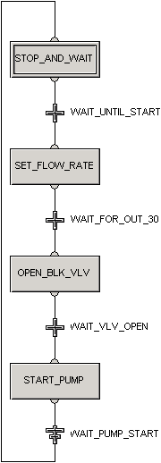

Complete the Sequential Function Chart diagram
-
Repeat the procedures for adding steps and transitions using the
information in the following table. (Drag
Step and
Transition icons from the palette or use the
Sequence item on the palette to automatically
add multiple steps and transitions in one operation. Use a
Termination icon for the last transition.)
Tip:
On the View tab, in the Diagram group, click Diagram Preferences, and then check Display Grid and Snap to Grid to help you line up the SFC objects on the diagram.
Note:In the example, all Action Types are Assignment; all Action Qualifiers are Pulse, except for Action 2 in Step 2, which has an Action Qualifier of Non-stored. (The reason is that if Action 2 Step 2 were Pulse, it might not get set because it waits until the actual mode is Auto. It would fail on the first try and never be set.)
- Use the Connect Mode tool to connect the steps and transitions in order.
-
Change the step and transition names by right-clicking, selecting
Rename, and then typing the name listed in the
following table. Be sure to read the table footnote for important information
about statement syntax.
The finished SFC looks like this.
